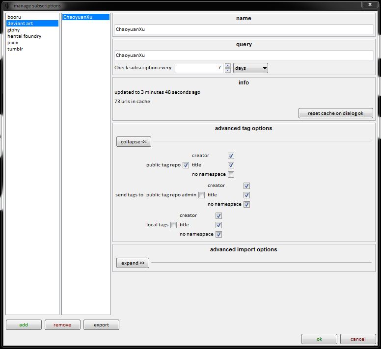
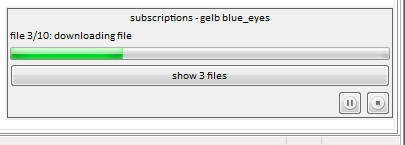
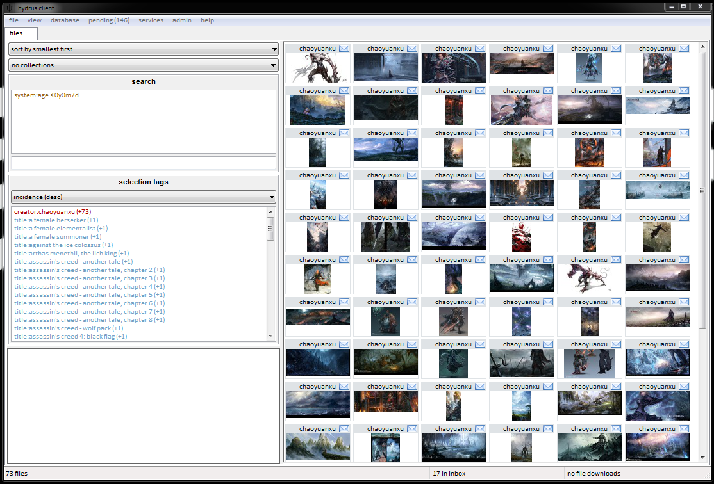

Do not try to create a subscription until you are comfortable with a normal gallery download page! If you haven't downloaded anything yet, go F9->download->gallery->[your preference] and run some searches, just so you get a feel before you make a mistake here.
what are subs?
Subscriptions are a way of telling the client to quietly and regularly repeat a gallery search. The client will sync with the gallery and download any new files behind the scenes, just as if you were running the download yourself.
You can set up a subscription for any of the gallery websites in the normal new page->download->gallery menu.
Here's the dialog, which is under services->manage subscriptions:

Here the client is set to search gelbooru for 'blue_eyes' every seven days. It will keep fetching gallery pages, starting at the first page, generating new media urls, until:
- It has never run before and reaches the last page in the gallery.
- It has never run before and has found as many files as the 'initial sync file limit'.
- It has run before and discovers a url it has previously seen.
Once it has finished adding urls, it will visit each new one in turn and strip out the file and any tags you have set it to parse. Urls it has checked in previous runs will not be rechecked, and tags will not be retroactively fetched.
when they run
When a subscription runs, it will show a popup message:

You don't really have to care about this all that much; it just lets you know what it is doing. The 'show x files' button is useful just to quickly make sure it is getting what you meant it to. Once it is done, it will collapse down and wait for you to dismiss it with a right click.
Serious errors, like server 404s, are recovered from as gracefully as possible. The client will retry those subscriptions the next day.
Here's the result of the subscription I set up above:

If I were to leave the subscription in place for seven days, it would recheck blue_eyes and download every single new file until it hit whichever of those ten is the newest.
how could this possibly go wrong?
This is quite a powerful tool, and if you are silly, you will end up spamming a server and likely upsetting someone or breaking something.
If you set a subscription to have no initial file limit on a simple query—say, blue_eyes on gelbooru—it will attempt to parse, at current count, 581,509 files. This would take a very long time and it would use a lot of gelbooru's bandwidth—enough that they probably have a system in place to ban your IP for it. Even if you set a reasonable initial file count, the sheer number of new blue_eyes files every week is probably a bit too large.
Remember: If you are going to scrape anything from a site, be polite about it!
So, I suggest you start with artist searches to begin with. These usually top out at about 1,000 files total and a handful of new files every week/month, and also hence don't take all that long. Once you are more confident, try doing multiple-tag queries. I suggest you leave simple single-tag queries for the manual download page, where you can hit 'that's enough' yourself.
help! it won't stop!
If you do put in a huge search, and the 'found x new files for subscription y' message is climbing terrifyingly higher and higher with no end in sight, just hit the pause button on the popup. You can also pause all current subscriptions from even starting at services->pause->subscriptions synchronisation. Then you can go back into the dialog and remove or edit at your own pace.